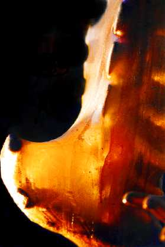

W
elcome to the studio of
Chandra Garsson
.
Enter [maze]
(enter gallery)
Chandra's Blog
Insomnia
About the Artist
About the Site
Email Chandra
Help
Chandra's Film
Deep Roots show with Pedro Moreno
All artwork by Chandra Garsson
Photos by Amanda K. Dahl
Web design by Akira M. Sasaki
This site is best viewed with millions of colors.
The images and words on this website are copyrighted.